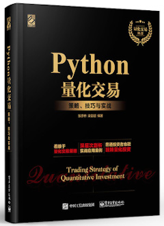
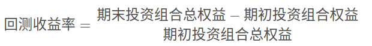
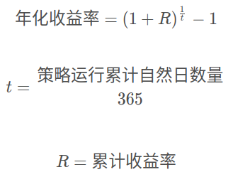

量化交易简介
1. 全球量化交易发展历史
量化投资的产生：1969年，爱德华·索普利用他发明的 “科学股票市场系统”，成立了第一个量化投资基金。索普也被称之为量化投资的鼻祖。“科学股票市场系统” 实际上是一种股票权证定价模型
量化投资的兴起：1988年，詹姆斯·西蒙斯成立了大奖章基金，从事高频交易和多策略交易。基金成立 20 多年来收益率达到了年化 70% 左右，除去报酬后达到 40% 以上。西蒙斯也因此被称为 "量化对冲之王"。
量化交易的繁荣：1991年，彼得·穆勒发明了 alpha系统策略 等，开始用 计算机+金融数据来设计模型和构建组合。
2. 国内量化交易发展历史
量化投资元年：2010年，沪深300股指期货上市，此时的量化基金终于具备了可行的对冲工具，各种量化投资策略如alpha策略、股指期货套利策略才真正有了大展拳脚的空间，可以说2010年是中国量化投资元年。
量化投资高速发展、多元化发展：2013-2015年股指新政之前可以说是国内量化基金有史以来最风光的一段时期。国内量化投资机构成批涌现，国内量化投资高速发展。
2012年到2016年量化对冲策略管理的资金规模增长了20倍，管理期货策略更是增长了30倍，增长的速度是所有策略中最快的。相比美国量化基金发展历程，中国现在基本处于美国90年代至21世纪之间的阶段。**
3. 什么是量化交易
量化交易（量化投资）是借助 现代统计学和数学（机器学习）的方法，利用 计算机技术 来进行交易的证券投资方式。学习量化交易，我们需要掌握：金融策略、挖掘技术和计算机技术。
量化交易从庞大的历史数据中海选能够带来超额收益的多种 “大概率” 事件以指定策略，用数量模型验证及固化这些规律和策略，然后严格执行已固化的策略来指导，以求获得可持续的、稳定且高于平均收益的超额回报。**
4. 量化交易分类

趋势性交易：适合一些主观交易的高手，用 技术指标 作为辅助工具在市场中如鱼得水的，但如果只用各种技术指标或指标组合作为核心算法构建模型，从未见过能长期盈利的。一般也会做一些量化分析操作，使用编程如 Python/matlab 。适合 金融专业出生的，对财务、金融市场非常了解 ，如交易员、基金经理等。
市场中性： 在任何市场环境下风险更低，收益稳定性更高，资金容量更大。适合一些量化交易者，发现市场中的alpha因子赚取额外收益，例如股票与股指期货的对冲策略等。会做一些量化分析操作，使用编程如 Python/matlab。适合计算机出生，擅长编程、机器学习、数据挖掘技术（量化分析），真正的量化交易人员。
高频交易：在极短的时间内频繁买进卖出，完成多次大量的交易，此类交易方式对硬件系统以及市场环境的要求极高，所以只有在成熟市场中的专业机构才会得到应用。适合一些算法高手，使用 C/C++ 编程语言去进行算法交易，对 软硬件条件要求比较高。
5. 金融产品及衍生品的投资策略
股票：市场中性投资占大多数、涉及少量的趋势性交易
期货：趋势性策略占大多数（期货不属于金融产品）
6. 量化交易的优势
( 1 ) 严格的纪律性
( 2 ) 完备的系统性： 首先表现在 多层次，包括在大类资产配置、行业选择、精选个股三个层次上我们都有模型；其次是 多角度，量化交易的核心投资思想包括宏观周期、市场结构、估值、成长、盈利质量、分析师盈利预测、市场情绪等多个角度；再者就是 多数据，就是海量数据的处理。人脑处理信息的能力是有限的，当一个资本市场只有100只股票，这对定性投资基金经理是有优势的，他可以深刻分析这100家公司。但在一个很大的资本市场，比如有成千上万只股票的时候，强大的定量化交易的信息处理能力能反映它的优势，能捕捉更多的投资机会，拓展更大的投资机会。
( 3 ) 数学模型取胜：股票实际操作过程中，运用概率分析，提高买卖成功的概率。
股票的量化投资可以说是一种 价值投资（价值投资是很多量化公司、基金公司所推崇的），我们所做的也是去 挖掘市场中的价值股票，而并非去预测股票涨跌来进行投资等等（至少目前机构不会采取这种方式指导投资），这需要大家明确的一个问题。其实，由于中国散户太多，有些公司本身不怎么样，但股票也涨得很厉害。美国的量化投资稳定一些，主要是因为美国几乎没有什么个人投资者，他们都是找一些基金公司代理去做投资。最终量化分析是众多投资机构的工具、分析手段而已。
7. 如何做量化交易项目
量化投资涵盖整个交易流程，需要完整的作为研究的 量化回测框架和实盘交易系统 作为支撑。量化交易研究流程：量化回测框架提供完整的数据，以及回测机制进行策略评估研究，并能够 实时进行模拟交易，为实盘交易提供选择。
我们的研究一般在回测平台中做，一般需要这样做：
( 1 ) 获取数据：行情数据、基本面数据
( 2 ) 数据挖掘：这部分很重要，大多数在公司会做这个部分。需要用到机器学习算法、特征工程等来分析结果，指导我们的策略。
( 3 ) 构建策略
( 4 ) 策略回测
( 5 ) 策略分析：策略不是一直有效的，基金公司频繁去分析数据、挖掘数据，更新策略。
( 6 ) 模拟交易
( 7 ) 实盘交易
具体流程包含的内容：
( 1 ) 获取数据：公司财务、新闻数据；基本行情数据。
( 2 ) 数据分析与挖掘：传统分析方法、机器学习，数据挖掘方法；数据处理，标准化，去极值，中性化分组回测，行业分布。
( 3 ) 构建策略：获取历史行情，历史持仓信息，调仓记录等；止盈止损单，限价单，市价单。
( 4 ) 回测：股票涨跌停、停复牌处理；市场冲击，交易滑点，手续费。
( 5 ) 策略分析：订单分析，成交分析，持仓分析。
( 6 ) 模拟交易：接入实时行情，实时获取成交回报；实时监控，实时归因分析。
( 7 ) 实盘交易：接入真实券商账户。
8. 什么是量化策略
量化策略是指使用计算机作为工具，通过一套固定的逻辑来分析和判断，最后做出决策。量化策略既可以自动执行，也可以人工执行。
9. 量化开发和研究岗位要求
( 1 ) 基于交易市场数据，研究、开发交易策略，进行基础建模
( 2 ) 负责对交易策略进行回测、跟踪、分析、优化
( 3 ) 定期对交易策略的运行结果进行总结，给出分析报告，评估市场适用度
( 4 ) 负责数据挖掘、处理和数据统计分析，从数据中发现规律，为量化分析提供支持，开发量化模型策略
( 5 ) 与基金经理合作跟踪优化股票市场量化策略在实盘的表现
量化回测框架
1. 量化回测框架介绍
zipline是Python的一个第三方算法交易库，这是一个支持回测和现场交易的事件驱动系统。目前，zipline被用于生产回测和实时交易引擎，为Quantopian提供动力。它是一个免费的和以社区为中性的托管平台。zipline本身只支持美国的证券，如果我们用需要改很多东西。
云端也有量化回测框架提供部分满足需求的数据，但是平台数据质量不行，指标不完整，且策略运行在远端服务器。在学习的时候无法自己去实现一个回测框架，这是因为我们没有完整的股票行情和基本面数据。
回测平台是载体，重点在于快速验证策略。证券投资机构各自使用回测框架不同，并没有通用的框架。那我们这里选择国内的 RiceQuant 回测平台：

2. 策略创建运行的流程
完整的策略需要做的事情有：选择策略的运行信息，即选择运行区间和初始资金，选择回测频率，选择股票池；编写策略的逻辑，即获取股票行情、基本面数据；分析结果，即策略指标分析。
策略初始设置：设置回测的 起止日期、初始资金和回测频率。起止日期是策略运行的时间区间；初始资金是用于投资的总资金；回测的频率有两种选择，日回测和分钟回测（对于市场中性，判断周期可能更长，一个月等）。做股票量化选择日回测即可。
策略主体运行流程分析：
( 1 ) 在init函数中实现策略初始化逻辑，策略的股票池：在哪些股票中进行交易判断（例如：HS300）
( 2 ) 可以选择在before_trading函数进行一些每日开盘之前的操作，比如获取历史行情做一些数据预处理，获取当前账户资金等。
( 3 ) 在handle_bar函数中实现策略具体逻辑，包括交易信号的产生、订单的创建。handle_bar内的逻辑会在每次bar数据更新的时候被触发。
运行顺序：在运行策略时首先运行 init 函数，但只运行一次。before_trading 和 handle_bar 函数每日都会被调用，每日交易之前首先运行 before_trading，然后再运行 handle_bar 函数进行每日的交易的判断。**
3. 数据获取接口的种类
( 1 ) 指定行业、板块股票列表
( 2 ) 指定股票合约历史数据 [ history_bars ]
( 3 ) 财务数据 [ get_fundamentals ]
4. 获取行业股票列表
获取行业股票列表，以获取餐饮业的股票列表为例：
def init(context):
# 获取餐饮业股票列表
context.catering_stock_list = industry('H62')
def before_trading(context):
# 打印股票列表
print(context.catering_stock_list)
def handle_bar(context, bar_dict):
# 主要的算法逻辑
pass
打印出餐饮业股票列表：
2019-12-02 INFO ['000721.XSHE', '002306.XSHE', '002186.XSHE']
2019-12-03 INFO ['000721.XSHE', '002306.XSHE', '002186.XSHE']
2019-12-04 INFO ['000721.XSHE', '002306.XSHE', '002186.XSHE']
2019-12-05 INFO ['000721.XSHE', '002306.XSHE', '002186.XSHE']
2019-12-06 INFO ['000721.XSHE', '002306.XSHE', '002186.XSHE']
2019-12-09 INFO ['000721.XSHE', '002306.XSHE', '002186.XSHE']
2019-12-10 INFO ['000721.XSHE', '002306.XSHE', '002186.XSHE']
5. 获取板块股票列表
获取板块股票列表，以获取能源板块列表为例：
def init(context):
# 获取能源板块列表
context.energy_sector_list = sector("Energy")
def before_trading(context):
# 打印能源板块列表
print(context.energy_sector_list)
def handle_bar(context, bar_dict):
# 主要的算法逻辑
pass
打印能源板块列表：
2019-12-02 INFO ['600688.XSHG', '600397.XSHG', '600777.XSHG', '002353.XSHE', '000059.XSHE', '300309.XSHE',
'000937.XSHE', '600028.XSHG', '000159.XSHE', '600583.XSHG', '000968.XSHE', '600871.XSHG', '000552.XSHE',
'600792.XSHG', '603727.XSHG', '002554.XSHE', '601666.XSHG', '603113.XSHG', '002207.XSHE', '601101.XSHG',
'600508.XSHG', '600989.XSHG', '300164.XSHE', '002278.XSHE', '000780.XSHE', '600123.XSHG', '600725.XSHG',
'600759.XSHG', '300191.XSHE', '000406.XSHE', '600997.XSHG', '603800.XSHG', '600403.XSHG', '002018.XSHE',
'600971.XSHG', '600065.XSHG', '000763.XSHE', '600387.XSHG', '002629.XSHE', '300157.XSHE', '300471.XSHE',
'601898.XSHG', '601798.XSHG', '603036.XSHG', '000956.XSHE', '600740.XSHG', '600758.XSHG', '600188.XSHG',
'600968.XSHG', '603798.XSHG', '603619.XSHG', '002128.XSHE', '601808.XSHG', '000698.XSHE', '600002.XSHG',
'002828.XSHE', '300084.XSHE', '600395.XSHG', '000852.XSHE', '000983.XSHE', '000096.XSHE', '600772.XSHG',
'601015.XSHG', '600256.XSHG', '601857.XSHG', '601699.XSHG', '000817.XSHE', '000723.XSHE', '002259.XSHE',
'002221.XSHE', '002490.XSHE', '000866.XSHE', '000571.XSHE', '600348.XSHG', '601088.XSHG', '600121.XSHG',
'601918.XSHG', '000554.XSHE', '601001.XSHG', '300540.XSHE', '601011.XSHG', '000637.XSHE', '601225.XSHG']
6. 获取指数成分股列表
一般很少选择使用某个行业或某个板块的股票，这些板块的股票很可能不是很好。我们要投的是一些前景比较好的公司，所以我们选择指数成份股票。指数成份股是实时更新的，常见的指数成分股有：
"000001.XSHG" # 上证A股
"000300.XSHG" # HS300，沪深300
"000905.XSHG" # ZZ500，中正500
"000016.XSHG" # SZ50，深圳50
以中正500为例获取中正500的股票列表：
def init(context):
# 获取中正500股票列表
context.zz500_index_components_list = index_components("000905.XSHG")
def before_trading(context):
# 打印中正500股票列表
print(context.zz500_index_components_list)
def handle_bar(context, bar_dict):
# 主要的算法逻辑
pass
打印中正500的股票列表：
2019-12-03 INFO ['000587.XSHE', '600008.XSHG', '002157.XSHE', '601958.XSHG', '002589.XSHE', '600307.XSHG',
'601127.XSHG', '600416.XSHG', '600169.XSHG', '002500.XSHE', '600750.XSHG', '000488.XSHE', '603877.XSHG',
'002390.XSHE', '603556.XSHG', '600939.XSHG', '600642.XSHG', '002503.XSHE', '600037.XSHG', '601005.XSHG',
'601699.XSHG', '000552.XSHE', '600183.XSHG', '600694.XSHG', '002670.XSHE', '000559.XSHE', '600820.XSHG',
'601777.XSHG', '600280.XSHG', '002583.XSHE', '000686.XSHE', '002635.XSHE', '601866.XSHG', '000600.XSHE',
'300316.XSHE', '603868.XSHG', '600874.XSHG', '603501.XSHG', '000869.XSHE', '601615.XSHG', '600598.XSHG',
'002131.XSHE', '000727.XSHE', '600884.XSHG', '000513.XSHE', '000541.XSHE', '601168.XSHG', '600393.XSHG',
'000690.XSHE', '002414.XSHE', '300199.XSHE', '600141.XSHG', '600848.XSHG', '002002.XSHE', '600486.XSHG',
7. 获取股票合约数据
获取股票合约数据使用到的方法（相关参数的解释直接看API文档）：
history_bars(order_book_id, bar_count, frequency, fields=None, skip_suspended=True, include_now=False)
获取指定合约的历史行情，同时支持日以及分钟历史数据，该模块不可以在init方法中调用！
股票合约数据API文档链接：https://www.ricequant.com/doc/api/python/chn#data-methods-history_bars
获取股票合约数据：
def init(context):
# 在context中保存全局变量
context.s1 = "000001.XSHE"
# before_trading函数会在每天策略交易开始前被调用，当天只会被调用一次
def before_trading(context):
pass
def handle_bar(context, bar_dict):
# 主要的算法逻辑，必填项
# order_book_id：获取的历史数据数量，必填项
# bar_count：获取的历史数据数量，必填项
# frequency：获取数据什么样的频率进行。'1d'或'1m'分别表示每日和每分钟，必填项。您可以指定不同的分钟频率，例如'5m'代表5分钟线
# fields：返回数据字段。必填项。
# skip_suspended：是否跳过停牌，默认True，跳过停牌
# include_now：是否包括不完整的bar数据。默认为False，不包括。
# 获取开盘价格
open_price = history_bars(context.s1,5,'1d','open')
# 获取其它类型的价格
history_data = history_bars(context.s1,5,'1d',['open','high','low','close','volume','total_turnover','datetime'])
logger.info(open_price)
logger.info(history_data)
# 如果把频率改成1m，则回测频率必须为分钟回测
history_data02 = history_bars(context.s1,5,'1m',['open','high','low','close','volume','total_turnover','datetime'])
print(history_data02)
打印股票合约数据：
2019-12-02 INFO [15.89 15.64 15.47 15.54 15.35]
2019-12-02 INFO [(15.89, 15.89, 15.49, 15.62, 81529753., 1271594662, 20191126000000)
(15.64, 15.64, 15.39, 15.47, 47616998., 736584294, 20191127000000)
(15.47, 15.54, 15.44, 15.49, 37801651., 585252046, 20191128000000)
(15.54, 15.55, 15.18, 15.29, 65386691., 1001451096, 20191129000000)
(15.35, 15.43, 15.23, 15.36, 55387738., 849784129, 20191202000000)]
2019-12-03 INFO [15.64 15.47 15.54 15.35 15.3 ]
2019-12-03 INFO [(15.64, 15.64, 15.39, 15.47, 47616998., 736584294, 20191127000000)
(15.47, 15.54, 15.44, 15.49, 37801651., 585252046, 20191128000000)
(15.54, 15.55, 15.18, 15.29, 65386691., 1001451096, 20191129000000)
(15.35, 15.43, 15.23, 15.36, 55387738., 849784129, 20191202000000)
(15.3 , 15.46, 15.21, 15.45, 45541805., 700293548, 20191203000000)]
……
bar_dict是Bar对象，Bar对象与history_bars的区别是：Bar只能获取当天的交易数据，不能获取历史交易数据。logger.info(bar_dict[context.s1].close)是获取当前日期的交易信息。
8. 获取财务数据
财务指标是使用query查询的方式获取，这里的财务数据指标类别虽然有400多种，但是RQ平台的这些指标数据质量不高，很多指标没有经过运算处理成需要的指标，跟我们在讲金融数据处理的时候列出来的那些财务指标差别比较大。
获取财务数据使的函数：
get_fundamentals(query, entry_date=None, interval='1d', report_quarter=False)
获取财务数据：
def init(context):
# 在context中保存全局变量
# context.s1 = "000001.XSHE"
pass
# before_trading函数会在每天策略交易开始前被调用，当天只会被调用一次
def before_trading(context):
pass
def handle_bar(context, bar_dict):
# 获取财务数据，默认是获取所有A股的股票财务数据
# 创建一个查询语句
q = query(fundamentals.eod_derivative_indicator.pe_ratio)
fund = get_fundamentals(q) # 回测不需要传入日期，默认是当天的数据
logger.info(fund.T)
# after_trading函数会在每天策略交易结束后被调用，当天只会被调用一次
def after_trading(content):
pass
9. 使用过滤条件选股
还可以设置一些过滤条件来帮助我们选股：
( 1 ) query ( ).filter ( )：过滤大小
( 2 ) query ( ).order_by ( )：排序
( 3 ) query ( ).limit ( )：限制数量
( 4 ) fundamentals.stockcode.in_( )：在指定的股票池当中过滤
测试使用过滤条件filter过滤股票：
def init(context):
# 在context中保存全局变量
# context.s1 = "000001.XSHE"
pass
# before_trading函数会在每天策略交易开始前被调用，当天只会被调用一次
def before_trading(context):
pass
def handle_bar(context, bar_dict):
# 获取财务数据，默认是获取所有A股的股票财务数据
# 创建一个查询语句
q = query(
fundamentals.eod_derivative_indicator.pe_ratio,
fundamentals.eod_derivative_indicator.pcf_ratio
).filter(
fundamentals.eod_derivative_indicator.pe_ratio > 20,
fundamentals.eod_derivative_indicator.pcf_ratio < 50
)
fund = get_fundamentals(q) # 回测不需要传入日期，默认是当天的数据
logger.info(fund.T)
# after_trading函数会在每天策略交易结束后被调用，当天只会被调用一次
def after_trading(content):
pass
测试结果：
2019-12-02 09:31:00 INFO pe_ratio pcf_ratio
000020.XSHE 469.167 -132.305
000023.XSHE 24.2256 14.034
000025.XSHE 74.511 -1304.65
000009.XSHE 36.5007 4.2342
000008.XSHE 27.8938 -16.5274
000021.XSHE 38.9316 33.4623
……
测试使用过滤条件 order_by 过滤股票：
def init(context):
# 在context中保存全局变量
# context.s1 = "000001.XSHE"
pass
# before_trading函数会在每天策略交易开始前被调用，当天只会被调用一次
def before_trading(context):
pass
def handle_bar(context, bar_dict):
# 获取财务数据，默认是获取所有A股的股票财务数据
# 创建一个查询语句
q = query(
fundamentals.eod_derivative_indicator.pe_ratio,
fundamentals.eod_derivative_indicator.pcf_ratio
).filter(
fundamentals.eod_derivative_indicator.pe_ratio > 20,
fundamentals.eod_derivative_indicator.pcf_ratio < 50
).order_by(
fundamentals.eod_derivative_indicator.pe_ratio # 默认按照升序排序，降序使用 fundamentals.eod_derivative_indicator.pe_ratio.asc
)
fund = get_fundamentals(q) # 回测不需要传入日期，默认是当天的数据
logger.info(fund.T)
# after_trading函数会在每天策略交易结束后被调用，当天只会被调用一次
def after_trading(content):
pass
测试结果：
2019-12-02 09:31:00 INFO pe_ratio pcf_ratio
600113.XSHG 20.0129 21.9759
600676.XSHG 20.0165 10.1316
300258.XSHE 20.0204 9.2312
603360.XSHG 20.0549 40.1861
300382.XSHE 20.0974 -47.8644
300485.XSHE 20.1273 27.4275
600731.XSHG 20.1301 20.4888
……
测试使用过滤条件 limit 过滤股票：
def init(context):
# 在context中保存全局变量
# context.s1 = "000001.XSHE"
pass
# before_trading函数会在每天策略交易开始前被调用，当天只会被调用一次
def before_trading(context):
pass
def handle_bar(context, bar_dict):
# 获取财务数据，默认是获取所有A股的股票财务数据
# 创建一个查询语句
q = query(
fundamentals.eod_derivative_indicator.pe_ratio,
fundamentals.eod_derivative_indicator.pcf_ratio
).filter(
fundamentals.eod_derivative_indicator.pe_ratio > 20,
fundamentals.eod_derivative_indicator.pcf_ratio < 50
).order_by(
fundamentals.eod_derivative_indicator.pe_ratio # 默认按照升序排序，降序使用 fundamentals.eod_derivative_indicator.pe_ratio.asc
).limit(10)
fund = get_fundamentals(q) # 回测不需要传入日期，默认是当天的数据
logger.info(fund.T)
# after_trading函数会在每天策略交易结束后被调用，当天只会被调用一次
def after_trading(content):
pass
测试结果：
2019-12-02 09:31:00 INFO pe_ratio pcf_ratio
600113.XSHG 20.0129 21.9759
600676.XSHG 20.0165 10.1316
300258.XSHE 20.0204 9.2312
603360.XSHG 20.0549 40.1861
300382.XSHE 20.0974 -47.8644
300485.XSHE 20.1273 27.4275
600731.XSHG 20.1301 20.4888
000761.XSHE 20.1325 3.8861
000411.XSHE 20.1383 17.2282
600271.XSHG 20.1523 19.327
2019-12-02 09:32:00 INFO pe_ratio pcf_ratio
600113.XSHG 20.0129 21.9759
600676.XSHG 20.0165 10.1316
300258.XSHE 20.0204 9.2312
……
测试在指定股票池中（沪深300）过滤股票：
def init(context):
# 获取沪深300股票池中的股票
context.hs300_index_components_list = index_components("000300.XSHG")
# before_trading函数会在每天策略交易开始前被调用，当天只会被调用一次
def before_trading(context):
pass
def handle_bar(context, bar_dict):
# 获取财务数据，默认是获取所有A股的股票财务数据
# 创建一个查询语句
q = query(
fundamentals.eod_derivative_indicator.pe_ratio,
fundamentals.eod_derivative_indicator.pcf_ratio
).filter(
fundamentals.eod_derivative_indicator.pe_ratio > 20,
fundamentals.eod_derivative_indicator.pcf_ratio < 50
).order_by(
fundamentals.eod_derivative_indicator.pe_ratio # 默认按照升序排序，降序使用 fundamentals.eod_derivative_indicator.pe_ratio.asc
).filter(
fundamentals.stockcode.in_(context.hs300_index_components_list)
).limit(10)
fund = get_fundamentals(q) # 回测不需要传入日期，默认是当天的数据
logger.info(fund.T)
# after_trading函数会在每天策略交易结束后被调用，当天只会被调用一次
def after_trading(content):
pass
测试结果：
2019-12-02 09:31:00 INFO pcf_ratio pe_ratio
600271.XSHG 19.327 20.1523
601633.XSHG 4.3186 20.2625
002001.XSHE 12.5034 20.3645
601021.XSHG 12.7549 20.4143
002202.XSHE 15.6682 20.5027
600030.XSHG 4.4997 20.5932
000423.XSHE 21.8234 20.6055
600109.XSHG 9.5708 21.1123
000166.XSHE -8.5859 21.2636
601881.XSHG 42.3332 21.3651
2019-12-02 09:32:00 INFO pcf_ratio pe_ratio
600271.XSHG 19.327 20.1523
601633.XSHG 4.3186 20.2625
……
10. 使用定时器获取财务数据
通过财务数据选股票，不会每天都去获取数据，因为可能获取的股票在近几天是同样的。可以每隔一周、一个月获取一些符合条件的股票。这里可以使用scheduler定时器获取数据，每天运行使用scheduler.run_daily，每周运行使用scheduler.run_weekly，每月运行scheduler.run_monthly。但是，这三个定时器函数只能在init函数中使用。
scheduler.run_daily(function)：每天运行一次的function，只能在init中使用。
注意：init 函数初始化后，如果定时器设置了每月在第一个交易日执行，那么第一个交易日执行 before_trading 函数后，再执行 get_data 函数，最后再执行 after_trading 函数。没有设置定时器的交易日不运行 get_data 函数，只会先后运行before_trading、after_trading函数。
参数 类型 注释 function function 使传入的function每日运行，function函数一定要包含并且只能包含 context 和 bar_dict 两个输入参数
每天运行一次的定时器：
def init(context):
# 获取沪深300股票池中的股票
context.hs300_index_components_list = index_components("000300.XSHG")
# 定义一个按天运行一次的定时器
scheduler.run_daily(get_data)
def get_data(context, bar_dict):
# 按月查询财务数据
# q = query() # 默认是获取这个月第一天的财务数据
q = query(
fundamentals.eod_derivative_indicator.pb_ratio
).filter(
fundamentals.eod_derivative_indicator.pb_ratio > 30
).filter(
fundamentals.stockcode.in_(context.hs300_index_components_list)
)
fund = get_fundamentals(q)
logger.info(fund)
# before_trading函数会在每天策略交易开始前被调用，当天只会被调用一次
def before_trading(context):
pass
def handle_bar(context, bar_dict):
pass
# after_trading函数会在每天策略交易结束后被调用，当天只会被调用一次
def after_trading(content):
pass
测试结果：
2020-02-03 09:31:00 INFO 002607.XSHE
pb_ratio 40.7768
2020-02-04 09:31:00 INFO 002607.XSHE
pb_ratio 36.6894
2020-02-05 09:31:00 INFO 002607.XSHE
pb_ratio 40.3632
2020-02-06 09:31:00 INFO 002607.XSHE
pb_ratio 40.7525
2020-02-07 09:31:00 INFO 002607.XSHE
pb_ratio 43.7937
2020-02-10 09:31:00 INFO 002607.XSHE
pb_ratio 42.1636
2020-02-11 09:31:00 INFO 002607.XSHE
pb_ratio 42.3583
2020-02-12 09:31:00 INFO 002607.XSHE
pb_ratio 42.8205
2020-02-13 09:31:00 INFO 002607.XSHE
pb_ratio 42.5529
scheduler.run_monthly(function, tradingday=t)：每月运行一次的function，只能在init中使用。
注意：tradingday的负数表示倒数，tradingday表示交易日，如果某月只有三个交易日，则此月的tradingday=3与tradingday=-1相同。
| 参数 | 类型 | 注释 |
|---|---|---|
| function | function | 使传入的 function 每日交易开始前运行，function函数一定要包含并且只能包含 context 和 bar_dict 两个输入参数 |
| tradingday | int | 范围为 [-23,1]，[1,23]。例如：1代表每月第一个交易日。-1代表每月倒数第一个交易日，用户必须指定 |
每月运行一次的定时器：
def init(context):
# 获取沪深300股票池中的股票
context.hs300_index_components_list = index_components("000300.XSHG")
# 定义一个按月运行的定时器
# 每月只运行一次并指定第一个交易日
scheduler.run_monthly(get_data, tradingday=1)
def get_data(context, bar_dict):
# 按月查询财务数据
# q = query() # 默认是获取这个月第一天的财务数据
q = query(
fundamentals.eod_derivative_indicator.pb_ratio
).filter(
fundamentals.eod_derivative_indicator.pb_ratio > 30
).filter(
fundamentals.stockcode.in_(context.hs300_index_components_list)
)
fund = get_fundamentals(q)
logger.info(fund)
# before_trading函数会在每天策略交易开始前被调用，当天只会被调用一次
def before_trading(context):
pass
def handle_bar(context, bar_dict):
pass
# after_trading函数会在每天策略交易结束后被调用，当天只会被调用一次
def after_trading(content):
pass
测试结果：
2020-01-02 09:31:00 INFO 002607.XSHE
pb_ratio 43.5018
2020-02-03 09:31:00 INFO 002607.XSHE
pb_ratio 40.7768
11. 回测交易接口
➢ 交易函数API
order_shares(id_or_ins, amount, style=MarketOrder())：指定股数交易。落指定股数的买/卖单是最常见的落单方式之一，如有需要落单类型当做一个参量传入，如果忽略掉落单类型，那么默认是市价单（market order）。
| 参数 | 类型 | 注释 |
|--|--|--|
| id_or_ins | str或instrument对象| 股票代码。order_book_id或symbol或instrument对象，用户必须指定。 |
| amount | int | 需要落单的股数。正数代表买入，负数代表卖出。|
| style | OrderType | 订单类型，默认是市价单。目前支持的订单类型有：MarketOrder()和LimitOrder(limit_price)，LimitOrder是用于设置限价单的|
指定股数交易测试：
def init(context):
context.s1 = "000001.XSHE"
# before_trading函数会在每天策略交易开始前被调用，当天只会被调用一次
def before_trading(context):
pass
def handle_bar(context, bar_dict):
# 开始编写你的主要算法逻辑
# 进行交易
order_shares(context.s1, 1000)
# after_trading函数会在每天策略交易结束后被调用，当天只会被调用一次
def after_trading(content):
pass
测试结果：

 order_lots(id_or_ins, amount, style=OrderType)：指定手数发送买卖单。如果有需要落单类型当做一个参量传入，如果忽略掉落单类型，那么默认是市价单。
| 参数 | 类型 | 注释 |
|--|--|--|
| id_or_ins | str或instrument对象 | order_book_id或symbol或instrument对象，用户必须指定 |
| amount | float | 多少手的数目。正数表示买入，负数表示卖出，用户必须指定 |
| style | OrderType | 订单类型，默认是市价单。目前支持的订单类型有MarkOrder和LimitOrder(limit_price) |
order_lots(id_or_ins, amount, style=OrderType)：指定手数发送买卖单。如果有需要落单类型当做一个参量传入，如果忽略掉落单类型，那么默认是市价单。
| 参数 | 类型 | 注释 |
|--|--|--|
| id_or_ins | str或instrument对象 | order_book_id或symbol或instrument对象，用户必须指定 |
| amount | float | 多少手的数目。正数表示买入，负数表示卖出，用户必须指定 |
| style | OrderType | 订单类型，默认是市价单。目前支持的订单类型有MarkOrder和LimitOrder(limit_price) |
指定手数交易测试：
def init(context):
context.s1 = "000001.XSHE"
# before_trading函数会在每天策略交易开始前被调用，当天只会被调用一次
def before_trading(context):
pass
def handle_bar(context, bar_dict):
# 开始编写你的主要算法逻辑
# 进行交易，10手股票
order_lots(context.s1, 10) # 等价于order_shares(context, 1000)
# after_trading函数会在每天策略交易结束后被调用，当天只会被调用一次
def after_trading(content):
pass
测试结果：
 order_value(id_or_ins, cash_amount, style=OrderType)：指定价值交易。使用想要花费金钱买入或卖出想要的股票，正数表示买入，负数表示卖出（暂不支持卖空）。股票的股数总是会被调整成对应的100的倍数。当提交一个卖单时，该方法代表的意义是希望通过卖出该股票套现的金额。如果金额超出了所持有股票的价值，那么将卖出所有股票。如果金额不足，该 API 将不会创建发送订单。
| 参数 | 类型 | 注释 |
|--|--|--|
| id_or_ins | str或instrument对象 | order_book_id |
| cash_amount | float | 需要花费现金购买或卖出证券的数目。正数代表买入，负数代表卖出，用户必须指定。 |
| style | OrderType | 订单类型，默认是市价单。目前支持的订单类型有MarkOrder和LimitOrder(limit_price) |
order_value(id_or_ins, cash_amount, style=OrderType)：指定价值交易。使用想要花费金钱买入或卖出想要的股票，正数表示买入，负数表示卖出（暂不支持卖空）。股票的股数总是会被调整成对应的100的倍数。当提交一个卖单时，该方法代表的意义是希望通过卖出该股票套现的金额。如果金额超出了所持有股票的价值，那么将卖出所有股票。如果金额不足，该 API 将不会创建发送订单。
| 参数 | 类型 | 注释 |
|--|--|--|
| id_or_ins | str或instrument对象 | order_book_id |
| cash_amount | float | 需要花费现金购买或卖出证券的数目。正数代表买入，负数代表卖出，用户必须指定。 |
| style | OrderType | 订单类型，默认是市价单。目前支持的订单类型有MarkOrder和LimitOrder(limit_price) |
指定价值交易测试：
def init(context):
context.s1 = "000001.XSHE"
# before_trading函数会在每天策略交易开始前被调用，当天只会被调用一次
def before_trading(context):
pass
def handle_bar(context, bar_dict):
# 开始编写你的主要算法逻辑
# 指定价值交易测试，每笔成交量与成交价的乘积(每笔的金额)要小于￥1600
order_value(context.s1, 1600)
# after_trading函数会在每天策略交易结束后被调用，当天只会被调用一次
def after_trading(content):
pass
测试结果：
 order_target_percent(id_or_ins, percent, style=OrderType)：按照目标比例下单。买入或卖出证券以正确调整该证券的仓位到占有一个指定的投资组合的目标百分比（暂不支持卖空）。需要计算一个应该调整的仓位。
order_target_percent(id_or_ins, percent, style=OrderType)：按照目标比例下单。买入或卖出证券以正确调整该证券的仓位到占有一个指定的投资组合的目标百分比（暂不支持卖空）。需要计算一个应该调整的仓位。position_to_adjust = target_position - current_position。投资组合的价值等于所有已有仓位的价值和剩余现金的总和。如果得到的position_to_adjust是正数，那么会买入该证券，否则会卖出该证券。如果资金不足，不会创建发送订单。
如果投资组合中有了平安银行股票的仓位，并且占据目前投资组合的10%的价值，那么以下代码会买入平安银行股票最终使其占据投资组合价值的15%。
order_target_percent('000001.XSHE', 0.15)
指定目标比例下单测试：
def init(context):
context.s1 = "000001.XSHE"
# before_trading函数会在每天策略交易开始前被调用，当天只会被调用一次
def before_trading(context):
pass
def handle_bar(context, bar_dict):
# 开始编写你的主要算法逻辑
order_target_percent(context.s1, 0.25)
# after_trading函数会在每天策略交易结束后被调用，当天只会被调用一次
def after_trading(content):
pass
测试结果：

如果股票涨了，就会卖出部分股票，保证使平安银行股票的价值占据投资组合的15%。同理，如果有跌，就会买如部分股票。
order_target_value(id_or_ins, cach_amount, style=OrderType)：买入或卖出并且自动调整该证券的仓位到一个目标价值（暂不支持卖空）。如果还没有任何该证券的仓位，那么会买入全部目标值的证券。如果一斤有该证券的仓位，则会买入或卖出该证券的现有仓库和目标仓位的价值差值的数目的证券。需要注意，如果资金不足，该API将不会创建发送订单。 | 参数 | 类型 | 注释 | |--|--|--| | id_or_ins | str或instrument对象 | order_book_id | | cash_amount | float | 最终的该证券仓位目标价值 | | style | OrderType | 订单类型，默认是市价单。目前支持的订单类型有MarkOrder和LimitOrder(limit_price) | 例：如果现在的投资组合中持有价值3000元的平安银行股票的仓位并且设置目标值为10000元，以下代码范例会发送价值7000的平安银行的买单到市场。
指定目标价值下单测试：
def init(context):
context.s1 = "000001.XSHE"
# before_trading函数会在每天策略交易开始前被调用，当天只会被调用一次
def before_trading(context):
pass
def handle_bar(context, bar_dict):
# 开始编写你的主要算法逻辑
# 指定目标价值下单
order_target_value(context.s1, 5000)
# after_trading函数会在每天策略交易结束后被调用，当天只会被调用一次
def after_trading(content):
pass
测试结果：
 ➢ 交易注意事项
➢ 交易注意事项
以下情况，交易会被回测平台自动拒单： - 可用资金不足 - 下单数量不足一手 - 下单价格超过当日涨跌停板限制（一般按照默认回测的收盘价） - 当前可卖（可平）仓位不足 - 股票当日停牌 - 合约已经退市（到期）或尚未上市
默认每日回测：每日收盘价去进行买入。
➢ 市价单和限价单
撮合机制：回测平台支持的撮合方式有两种，一种是当前收盘价，即当前bar发单，以当前bar收盘价作为参考价撮合。一种是开盘价，即当前bar发单，以下一个bar开盘价作为参考价撮合。
市价单：目的是为了快速成交，当前市价是多少，买入或卖出就是多少。默认是以市价单去买卖股票。
限价单：挂单的方式，例如：如果当时的市价是100，我们指定100.8卖出，99.8买入。，以预定的价格去成交，一般很少去用。
滑点：目的是在回测中使用，在模拟和实盘交易是不需要滑点。为了更好地模拟实际交易中订单对市场的冲击，引入滑点。若设置将在一定程度上使最后的成交价“恶化”，也就是买得更贵、卖得更便宜。这里滑点的方式是按照最后成加价的一定比例进行恶化。例如：设置滑点为0.1，如果原本买入交易的成交价是10元，则设置之后成交价将变成10.1元，也就是买得更贵。
卖空：如果是股票，当天买不可以当天卖，是不允许卖空的，而期货是允许卖空。
➢ 投资组合
投资组合是由投资人或金融机构所持有的股票、债券、金融衍生品等组成的集合，目的是分散风险。查看投资组合的信息：
def init(context):
context.s1 = '000001.XSHE'
# before_trading函数会在每天策略交易开始前被调用，当天只会被调用一次
def before_trading(context):
pass
def handle_bar(context, bar_dict):
# 开始编写你的主要算法逻辑
order_target_percent(context.s1, 0.1)
# 查看账户中的可用资金，投资组合的可用资金，为子账户可用资金的加和
print('投资组合的可用资金', context.portfolio.cash)
# 查看投资组合的当前市场价值，为子账户市场价值的加和
print('投资组合的当前市场价值', context.portfolio.market_value)
# 查看总权益，为子账户总权益的加和
print('投资组合的总价值', context.portfolio.total_value)
# after_trading函数会在每天策略交易结束后被调用，当天只会被调用一次
def after_trading(content):
pass
 我们还可以查看当前所持仓的股票和指定股票的仓位等信息：
我们还可以查看当前所持仓的股票和指定股票的仓位等信息：
def init(context):
# 平安银行股票代码
context.s1 = '000001.XSHE'
# 万科股票代码
context.s2 = '000002.XSHE'
# before_trading函数会在每天策略交易开始前被调用，当天只会被调用一次
def before_trading(context):
pass
def handle_bar(context, bar_dict):
# 开始编写你的主要算法逻辑
order_target_percent(context.s1, 0.1)
order_target_percent(context.s2, 0.1)
# 买入交易了之后，投资组合就会发生变化，不仅表现在资金上，而且表现在仓位上
# 查看所持仓位的股票
print(context.portfolio.positions.keys())
# 查看指定股票的股数
print('平安银行的仓位数：', context.portfolio.positions[context.s1].quantity)
print(' 万科的仓位数：', context.portfolio.positions[context.s2].quantity)
# 打印股票资金账户信息
print(context.stock_account)
# 查看账户中的可用资金，投资组合的可用资金，为子账户可用资金的加和
print('投资组合的可用资金', context.portfolio.cash)
# 查看投资组合的当前市场价值，为子账户市场价值的加和
print('投资组合的当前市场价值', context.portfolio.market_value)
# 查看总权益，为子账户总权益的加和
print('投资组合的总价值', context.portfolio.total_value)
print('--------------------------')
# after_trading函数会在每天策略交易结束后被调用，当天只会被调用一次
def after_trading(content):
pass
日志：
2020-01-02 INFO ['000001.XSHE', '000002.XSHE']
2020-01-02 INFO 平安银行的仓位数： 5900
2020-01-02 INFO 万科的仓位数： 3000
2020-01-02 INFO StockAccount({'positions': ['000002.XSHE', '000001.XSHE'], 'margin': 197213.0, 'frozen_cash': 0.0, 'market_value': 197213.0, 'total_value': 984052.608, 'cash': 786839.608, 'trading_pnl': -15777.000000000015, 'position_pnl': 0, 'transaction_cost': 170.39200000000002, 'daily_pnl': -15947.392000000014, 'dividend_receivable': 0, 'type': 'STOCK', 'total_cash': 786839.608})
2020-01-02 INFO 投资组合的可用资金 786839.608
2020-01-02 INFO 投资组合的当前市场价值 197213.0
2020-01-02 INFO 投资组合的总价值 984052.608
2020-01-02 INFO --------------------------
2020-01-03 WARN 订单创建失败: 下单量为0
2020-01-03 INFO ['000001.XSHE', '000002.XSHE']
2020-01-03 INFO 平安银行的仓位数： 5730
2020-01-03 INFO 万科的仓位数： 3000
2020-01-03 INFO StockAccount({'positions': ['000002.XSHE', '000001.XSHE'], 'margin': 194591.39999999997, 'frozen_cash': 0.0, 'market_value': 194591.39999999997, 'total_value': 984051.91946, 'cash': 789460.5194600001, 'trading_pnl': -292.05999999999995, 'position_pnl': 298.99999999997704, 'transaction_cost': 7.62854, 'daily_pnl': -0.6885400000228401, 'dividend_receivable': 0, 'type': 'STOCK', 'total_cash': 789460.5194600001})
2020-01-03 INFO 投资组合的可用资金 789460.5194600001
2020-01-03 INFO 投资组合的当前市场价值 194591.39999999997
2020-01-03 INFO 投资组合的总价值 984051.91946
2020-01-03 INFO --------------------------
……

12. 策略评价指标
( 1 ) 收益指标
回测收益率：策略在期限内的收益率。

基础收益：参考的标准，市场表现情况来作为标准来看我们的策略。回测收益比基准收益大，则策略表现越好。默认以HS300的总体表现来作为基准，也就是说我们的基准要比沪深300的基准要更好一些。
回测年化收益：如果不足一年，会根据当前几个月份的收益表现来计算一年可能的收益。我们一般以年化收益率取比较的策略的。

对于股票来讲，年化收益达到 15～30% 已近是非常好的策略了，年化收益率越高越好。
( 2 ) 风险指标
最大回撤：最大回撤比率越小越好，最好保持在 10%~30% 之间。
夏普比率：与无风险利率进行比较。夏普比率越大，说明单位风险所获得的风险回报越高。举例而言，假如国债的回报是4%，而您的投资组合预期回报是16%，您的投资组合的标准偏差是5%，那么用16%－4%,可以得出12%（代表您超出无风险投资的回报），再用12%÷5%＝2.4，代表投资者风险每增长1%，换来的是2.4%的多余收益。夏普比率越大，说明单位风险所获得的风险回报越高。夏普比率越高越好，达到1.5及其以上已经是很好的结果。 我们一般关注回测收益、基准收益、回测年化收益和基准年化收益以及最大回撤和夏普比率。
13. 实现第一个股票策略
选股和调仓，选股要求获取市盈率大于50且小于65、营业总收入前10的股票。调仓要求每日调仓，将所有的资金平摊到这10个股票的购买策略中，一次性卖出所有不符合条件的股票（昨天有今天没有的股票）。一般回测的是5~10年之间的数据：
# 可以自己import我们平台支持的第三方python模块，比如pandas、numpy等。
# 选股：获取市盈率大于50且小于65、营业总收入前10的股票
# 买卖：将所有的资金平摊到这10个股票的购买策略中，一次性卖出所有不符合条件的股票
# 调仓：这里按月调仓
# 在这个方法中编写任何的初始化逻辑。context对象将会在你的算法策略的任何方法之间做传递。
def init(context):
# 在context中保存全局变量
# context.s1 = "000001.XSHE"
# 交易日是每月的1号
scheduler.run_monthly(get_data, tradingday=1)
def get_data(context, bar_dict):
# 选股
q = query(
fundamentals.eod_derivative_indicator.pe_ratio,
fundamentals.income_statement.revenue
).filter(
fundamentals.eod_derivative_indicator.pe_ratio > 50,
fundamentals.eod_derivative_indicator.pe_ratio < 65 # 也可以分开过滤
).order_by(
fundamentals.income_statement.revenue.desc()
).limit(10)
fund = get_fundamentals(q)
# logger.info(fund.T)
# logger.info(type(fund))
context.stock_list = fund.T.index
# logger.info(context.stock_list)
# before_trading此函数会在每天策略交易开始前被调用，当天只会被调用一次
def before_trading(context):
pass
# 你选择的证券的数据更新将会触发此段逻辑，例如日或分钟历史数据切片或者是实时数据切片更新
def handle_bar(context, bar_dict):
# 开始编写你的主要的算法逻辑
# bar_dict[order_book_id] 可以拿到某个证券的bar信息
# context.portfolio 可以拿到现在的投资组合信息
# 使用order_shares(id_or_ins, amount)方法进行落单
# TODO: 开始编写你的算法吧！
# 查看仓位信息
# logger.info(context.portfolio.positions) # list类型
# 先判断仓位是否有股票，再判断旧的持有的股票是否在新的股票池中，如果没有则卖出
if len(context.portfolio.positions) != 0:
for stock_item in context.portfolio.positions:
# 如果旧的持有的股票不在新的股票池中则卖出
if stock_item not in context.stock_list:
order_target_percent(stock_item, 0)
# 买入每日更新的股票池中的新增加的股票
# 等比例买入，投资组合总价值的百分比平分10份
for stock_item in context.stock_list:
order_target_percent(stock_item, 0.1)
# after_trading函数会在每天交易结束后被调用，当天只会被调用一次
def after_trading(context):
pass
回测结果：

 如果不太理想，可以进一步调优，可以选择在沪深300中的股票：
如果不太理想，可以进一步调优，可以选择在沪深300中的股票：
# 可以自己import我们平台支持的第三方python模块，比如pandas、numpy等。
# 选股：获取市盈率大于50且小于65、营业总收入前10的股票
# 买卖：将所有的资金平摊到这10个股票的购买策略中，一次性卖出所有不符合条件的股票
# 调仓：这里按月调仓
# 调优：过滤HS300的股票
# 在这个方法中编写任何的初始化逻辑。context对象将会在你的算法策略的任何方法之间做传递。
def init(context):
# 定义选股范围
context.hs300 = index_components('000300.XSHG')
# 交易日是每月的1号
scheduler.run_monthly(get_data, tradingday=1)
def get_data(context, bar_dict):
# 选股
q = query(
fundamentals.eod_derivative_indicator.pe_ratio,
fundamentals.income_statement.revenue
).filter(
fundamentals.eod_derivative_indicator.pe_ratio > 50,
fundamentals.eod_derivative_indicator.pe_ratio < 65 # 也可以分开过滤
).order_by(
fundamentals.income_statement.revenue.desc()
).filter(
fundamentals.stockcode.in_(context.hs300)
).limit(10)
fund = get_fundamentals(q)
# logger.info(fund.T)
# logger.info(type(fund))
context.stock_list = fund.T.index
# logger.info(context.stock_list)
# before_trading此函数会在每天策略交易开始前被调用，当天只会被调用一次
def before_trading(context):
pass
# 你选择的证券的数据更新将会触发此段逻辑，例如日或分钟历史数据切片或者是实时数据切片更新
def handle_bar(context, bar_dict):
# 开始编写你的主要的算法逻辑
# bar_dict[order_book_id] 可以拿到某个证券的bar信息
# context.portfolio 可以拿到现在的投资组合信息
# 使用order_shares(id_or_ins, amount)方法进行落单
# TODO: 开始编写你的算法吧！
# 查看仓位信息
# logger.info(context.portfolio.positions) # list类型
# 先判断仓位是否有股票，再判断旧的持有的股票是否在新的股票池中，如果没有则卖出
if len(context.portfolio.positions) != 0:
for stock_item in context.portfolio.positions:
# 如果旧的持有的股票不在新的股票池中则卖出
if stock_item not in context.stock_list:
order_target_percent(stock_item, 0)
# 买入每日更新的股票池中的新增加的股票
# 等比例买入，投资组合总价值的百分比平分10份
for stock_item in context.stock_list:
order_target_percent(stock_item, 0.1)
# after_trading函数会在每天交易结束后被调用，当天只会被调用一次
def after_trading(context):
pass
回测结果（效果好了一些）：